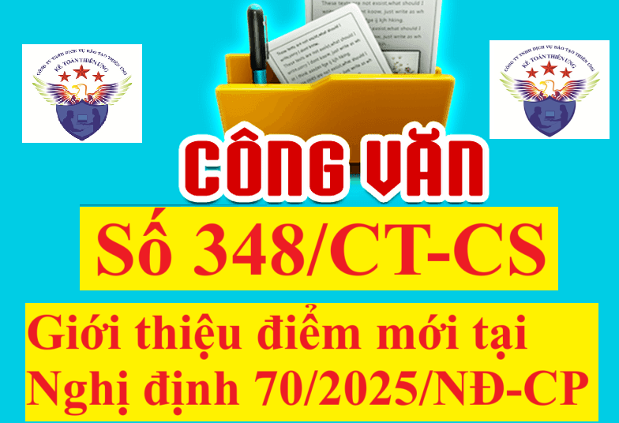

Ngày 28/3/2025, Cục Thuế ban hành Công văn 348/CT-CS giới thiệu nội dung mới tại Nghị định 70/2025/NĐ-CP sửa đổi, bổ sung một số điều của Nghị định 123/2020/NĐ-CP quy định về hóa đơn, chứng từ.
Để xem toàn bộ Nghị định 70/2025/NĐ-CP sửa đổi, bổ sung một số điều của Nghị định 123/2020/NĐ-CP quy định về hóa đơn, chứng từ. thì các bạn xem tại đây: Nghị định 70/2025/NĐ-CP sửa đổi Nghị định 123 về hóa đơn điện tử
Còn chi tiết nội dung của Công văn 348/CT-CS như sau:
Kính gửi: Các Chi cục Thuế khu vực.
Ngày 20/3/2025, Chính phủ đã ban hành Nghị định số 70/2025/NĐ-CP sửa đổi, bổ sung Nghị định số 123/2020/NĐ-CP ngày 19/10/2020 của Chính phủ quy định về hóa đơn, chứng từ (có hiệu lực thi hành kể từ ngày 01 tháng 6 năm 2025).Cục Thuế giới thiệu một số nội dung mới của Nghị định số 70/2025/NĐ-CP và đề nghị các Chi cục Thuế khu vực khẩn trương triển khai tuyên truyền, phổ biến nội dung của Nghị định số 70/2025/NĐ-CP nêu trên tới công chức thuế và người nộp thuế và chuẩn bị các điều kiện để đảm bảo thi hành. Trong đó, đối với người nộp thuế cần tập trung giới thiệu, tuyên truyền các nội dung liên quan đến quyền, trách nhiệm và nghĩa vụ của người nộp thuế như: loại hóa đơn (hóa đơn thương mại điện tử đối với hàng hóa, dịch vụ xuất khẩu, hóa đơn của doanh nghiệp chế xuất) (Điều 8); thời điểm lập hóa đơn (Điều 9); nội dung của hóa đơn (Điều 10); đối tượng áp dụng hóa đơn điện tử khởi tạo từ máy tính tiền (Điều 11); cấp hóa đơn điện tử (Điều 13); đăng ký, thay đổi nội dung đăng ký sử dụng hóa đơn điện tử (Điều 15); ngừng sử dụng hóa đơn điện tử (Điều 16); thay thế, điều chỉnh hóa đơn điện tử (Điều 19). (Chi tiết tại Phụ lục đính kèm). Cục Thuế thông báo để các Chi cục Thuế khu vực chủ động triển khai, thực hiện./.
PHỤ LỤC
Nghị định số 70/2025/NĐ-CP quy định về hóa đơn, chứng từ được Chính phủ ban hành ngày 20/3/2025, có hiệu lực thi hành kể từ ngày 01/6/2025. Nghị định sửa đổi, bổ sung 40/61 Điều của Nghị định số 123/2020/NĐ-CP. Cụ thể như sau:GIỚI THIỆU MỘT SỐ NỘI DUNG MỚI CỦA NGHỊ ĐỊNH SỐ 70/2025/NĐ-CP NGÀY 20 THÁNG 3 NĂM 2025 SỬA ĐỔI, BỔ SUNG MỘT SỐ ĐIỀU CỦA NGHỊ ĐỊNH SỐ 123/2020/NĐ-CP NGÀY 19 THÁNG 10 NĂM 2020 CỦA CHÍNH PHỦ QUY ĐỊNH VỀ HÓA ĐƠN, CHỨNG TỪ (Kèm theo công văn số 348/CT-CS ngày 28/3/2025 của Cục Thuế) 1. Nhóm nội dung liên quan đến người nộp thuế nhằm minh bạch, tạo thuận lợi cho người nộp thuế, đơn giản hóa thủ tục thực hiện. 1.1. Đối tượng áp dụng (Điều 2): Bổ sung đối tượng áp dụng hóa đơn điện tử là: “Nhà cung cấp ở nước ngoài không có cơ sở thường trú tại Việt Nam có hoạt động kinh doanh thương mại điện tử, kinh doanh dựa trên nền tảng số và các dịch vụ khác đăng ký tự nguyện sử dụng hóa đơn điện tử” và sử dụng loại hóa đơn là hóa đơn giá trị gia tăng (Điều 2 và khoản 1 Điều 8) 1.2. Nguyên tắc lập, quản lý, sử dụng hóa đơn, chứng từ (Điều 4) (i) Bổ sung các trường hợp người bán phải lập hóa đơn giao cho người mua bao gồm “các trường hợp lập hóa đơn theo quy định tại Điều 19”. (ii) Bổ sung quy định: Người bán hàng hóa, cung cấp dịch vụ, tổ chức cung cấp dịch vụ hóa đơn điện tử, cơ quan thuế sử dụng cơ sở dữ liệu về hóa đơn điện tử để thực hiện các biện pháp khuyến khích người tiêu dùng lấy hóa đơn khi mua hàng hóa, dịch vụ như: Chương trình khách hàng thường xuyên, chương trình tham gia dự thưởng, chương trình hóa đơn may mắn. Đối với biện pháp khuyến khích người tiêu dùng là cá nhân lấy hóa đơn khi mua hàng hóa, dịch vụ phục vụ công tác tuyên truyền, nâng cao ý thức người tiêu dùng do cơ quan thuế thực hiện, Bộ Tài chính tổ chức thực hiện nội dung này từ nguồn ngân sách nhà nước được đảm bảo hàng năm để hiện đại hóa, nâng cao hiệu lực, hiệu quả công tác quản lý thuế theo quy định của pháp luật quản lý thuế. (iii) Sửa đổi, bổ sung người bán (bao gồm hộ kinh doanh, cá nhân kinh doanh) được ủy nhiệm cho bên thứ ba lập hóa đơn điện tử. Hiện hành: Nghị định số 123/2020/NĐ-CP chỉ quy định người bán là doanh nghiệp, tổ chức kinh tế, tổ chức khác được ủy nhiệm cho bên thứ ba lập hóa đơn và Thông tư số 78/2021/TT-BTC hướng dẫn bên thứ ba là bên có quan hệ liên kết với người bán. (iv) Bổ sung quy định tích hợp biên lai thu phí và hóa đơn điện tử trên cùng một định dạng điện tử để thuận lợi cho người mua hàng hóa, dịch vụ và thuận lợi trong việc triển khai chuyển đổi số. 1.3. Loại hóa đơn (Điều 8) (i) Bổ sung quy định về loại hóa đơn của doanh nghiệp chế xuất: doanh nghiệp chế xuất có hoạt động kinh doanh khác (ngoài hoạt động chế xuất) khai thuế giá trị gia tăng theo phương pháp trực tiếp thì sử dụng hóa đơn bán hàng, khai thuế giá trị gia tăng theo phương pháp khấu trừ thì sử dụng hóa đơn giá trị gia tăng. (ii) Bổ sung hóa đơn thương mại điện tử: “là hóa đơn áp dụng đối với các tổ chức, doanh nghiệp, cá nhân (người xuất khẩu) có hoạt động xuất khẩu hàng hóa, cung cấp dịch vụ ra nước ngoài mà người xuất khẩu đáp ứng điều kiện chuyển dữ liệu hóa đơn thương mại bằng phương thức điện tử đến cơ quan thuế. Hóa đơn thương mại điện tử đáp ứng quy định về nội dung theo quy định tại Điều 10 Nghị định này và quy định về định dạng chuẩn dữ liệu của cơ quan thuế theo quy định tại Điều 12 Nghị định này. Trường hợp người xuất khẩu không đáp ứng điều kiện chuyển dữ liệu hóa đơn thương mại bằng phương thức điện tử đến cơ quan thuế thì lựa chọn lập hóa đơn giá trị gia tăng điện tử hoặc hóa đơn bán hàng điện tử.” 1.4. Thời điểm lập hóa đơn (Điều 9) (i) Bổ sung thời điểm lập hóa đơn đối với xuất khẩu hàng hóa (bao gồm cả gia công xuất khẩu) (lập hóa đơn thương mại điện tử hoặc hóa đơn giá trị gia tăng điện tử hoặc hóa đơn bán hàng điện tử): do người bán tự xác định nhưng chậm nhất không quá ngày làm việc tiếp theo kể từ ngày hàng hóa được thông quan theo quy định pháp luật về hải quan (khoản 1). (ii) Bổ sung đối với dịch vụ cung cấp cho tổ chức, cá nhân nước ngoài như đối với dịch vụ trong nước là thời điểm hoàn thành việc cung cấp dịch vụ không phân biệt đã thu được tiền hay chưa thu được tiền (khoản 2). (iii) Thời điểm lập hóa đơn đối với trường hợp cụ thể (khoản 4) - Bổ sung các trường hợp bán hàng hóa, cung cấp dịch vụ với số lượng lớn, phát sinh thường xuyên cần có thời gian đối soát số liệu giữa doanh nghiệp bán hàng hóa, cung cấp dịch vụ và khách hàng, đối tác, thời điểm lập hóa đơn là thời điểm hoàn thành việc đối soát dữ liệu giữa các bên nhưng chậm nhất không quá ngày 07 của tháng sau tháng phát sinh việc cung cấp dịch vụ hoặc không quá 07 ngày kể từ ngày kết thúc kỳ quy ước gồm: cung cấp dịch vụ hỗ trợ vận tải đường sắt, dịch vụ quảng cáo truyền hình, dịch vụ thương mại điện tử, dịch vụ ngân hàng (trừ hoạt động cho vay), chuyển tiền quốc tế, dịch vụ chứng khoán, xổ số điện toán, thu phí sử dụng đường bộ giữa nhà đầu tư và nhà cung cấp dịch vụ thu phí và các trường hợp khác theo hướng dẫn của Bộ Tài chính. - Bổ sung thời điểm lập hóa đơn của hoạt động kinh doanh bảo hiểm là thời điểm ghi nhận doanh thu bảo hiểm theo quy định của pháp luật về kinh doanh bảo hiểm. - Bổ sung thời điểm lập hóa đơn hoạt động kinh doanh vé xổ số truyền thống, xổ số biết kết quả ngay theo hình thức bán vé số in sẵn đủ mệnh giá cho khách hàng: sau khi thu hồi vé xổ số không tiêu thụ hết và chậm nhất là trước khi mở thưởng của kỳ tiếp theo thì doanh nghiệp lập 01 hóa đơn giá trị gia tăng điện tử có mã của cơ quan thuế cho từng đại lý là tổ chức, cá nhân cho vé xổ số được bán trong kỳ gửi cơ quan thuế cấp mã cho hóa đơn. - Bổ sung thời điểm lập hóa đơn hoạt động kinh doanh casino, trò chơi điện tử có thưởng: “là 01 ngày kể từ thời điểm kết thúc ngày xác định doanh thu, đồng thời doanh nghiệp kinh doanh casino và trò chơi điện tử có thưởng chuyển dữ liệu ghi nhận số tiền thu được (do đổi đồng tiền quy ước cho người chơi tại quầy, tại bàn chơi và số tiền thu tại máy trò chơi điện tử có thưởng) trừ đi số tiền đổi trả cho người chơi (do người chơi trúng thưởng hoặc người chơi không sử dụng hết) theo Mẫu 01/TH-DT Phụ lục IA ban hành kèm theo Nghị định này đến cơ quan thuế cùng thời điểm chuyển dữ liệu hóa đơn điện tử. Ngày xác định doanh thu là khoảng thời gian từ 0 giờ 00 phút đến 23 giờ 59 phút cùng ngày.” - Bổ sung thời điểm lập hóa đơn đối với hoạt động cho vay được xác định theo kỳ hạn thu lãi tại hợp đồng tín dụng giữa tổ chức tín dụng và khách hàng đi vay, trừ trường hợp đến kỳ hạn thu lãi không thu được và tổ chức tín dụng theo dõi ngoại bảng theo quy định pháp luật về tín dụng thì thời điểm lập hóa đơn là thời điểm thu được tiền lãi vay của khách hàng. Trường hợp trả lãi trước hạn theo hợp đồng tín dụng thì thời điểm lập hóa đơn là thời điểm thu lãi trước hạn. - Bổ sung thời điểm lập hóa đơn đối với hoạt động đại lý đổi ngoại tệ, hoạt động cung ứng dịch vụ nhận và chi, trả ngoại tệ của tổ chức kinh tế của tổ chức tín dụng là thời điểm đổi ngoại tệ, thời điểm hoàn thành dịch vụ nhận và chi trả ngoại tệ. - Sửa đổi thời điểm lập hóa đơn đối với hoạt động bán khí thiên nhiên, khí đồng hành, khí than được chuyển bằng đường ống dẫn khí đến người mua là thời điểm bên mua, bên bán xác định khối lượng khi giao của tháng nhưng chậm nhất là ngày cuối cùng của thời hạn kê khai, nộp thuế đối với tháng phát sinh nghĩa vụ thuế theo quy định pháp luật về thuế. Hiện hành: Nghị định số 123/2020/NĐ-CP quy định thời điểm lập hóa đơn đối với hoạt động bán khí thiên nhiên, khí đồng hành, khí than là thời điểm bên mua, bên bán xác định khối lượng khí giao hàng tháng nhưng chậm nhất không quá 07 ngày kế tiếp kể từ ngày bên bán gửi thông báo lượng khí giao hàng tháng. - Bỏ điểm g khoản 4 quy định về thời điểm lập hóa đơn cuối ngày đối với hoạt động kinh doanh thương mại bán lẻ, kinh doanh dịch vụ ăn uống theo mô hình hệ thống cửa hàng bán trực tiếp đến người tiêu dùng nhưng việc hạch toán toàn bộ hoạt động kinh doanh thực hiện tại trụ sở chính. - Bỏ quy định lập hóa đơn tổng cuối ngày hoặc cuối tháng đối với các dịch vụ ngân hàng, chứng khoán, bảo hiểm, dịch vụ chuyển tiền qua ví điện tử, dịch vụ ngừng và cấp điện trở lại của đơn vị phân phối điện cho người mua là cá nhân không kinh doanh, không có nhu cầu lấy hóa đơn. - Sửa đổi, bổ sung thời điểm lập hóa đơn đối với kinh doanh vận tải hành khách bằng xe taxi có sử dụng phần mềm tính tiền, tại thời điểm kết thúc chuyển đi thực hiện lập hóa đơn và chuyển dữ liệu hóa đơn tới cơ quan thuế. Hiện hành: Nghị định số 123/2020/NĐ-CP quy định doanh nghiệp, hợp tác xã kinh doanh vận tải hành khách bằng taxi có sử dụng phần mềm tính tiền thực hiện gửi thông tin các chuyến đi và gửi về cơ quan thuế các thông tin; trường hợp khách hàng lấy hóa đơn thì lập hóa đơn cho khách hàng và gửi hóa đơn cho cơ quan thuế. - Tại điểm n khoản 4 thay thế cụm từ “cơ sở y tế kinh doanh dịch vụ khám chữa bệnh” thành “cơ sở khám bệnh, chữa bệnh” và bổ sung quy định “cơ sở khám bệnh chữa bệnh lập hóa đơn cho cơ quan bảo hiểm xã hội tại thời điểm được cơ quan bảo hiểm xã hội thanh, quyết toán chi phí khám, chữa bệnh cho người có thẻ bảo hiểm y tế” để phù hợp với Luật Bảo hiểm y tế. 1.5. Nội dung của hóa đơn (Điều 10) (i) Bổ sung nội dung thông tin người mua, ngoài thông tin tên, địa chỉ, mã số thuế thì sử dụng số định danh cá nhân của người mua hoặc mã số đơn vị có quan hệ với ngân sách. (ii) Bổ sung nội dung tên hàng hóa, dịch vụ: đối với kinh doanh dịch vụ ăn uống thì trên hóa đơn thể hiện mặt hàng ăn, uống; trường hợp kinh doanh vận tải thì trên hóa đơn phải thể hiện biển kiểm soát phương tiện vận tải, hành trình (điểm đi-điểm đến); đối với doanh nghiệp kinh doanh vận tải cung cấp dịch vụ vận tải trên nền tảng số, hoạt động thương mại điện tử thì phải thể hiện tên hàng hóa vận chuyển, thông tin tên, địa chỉ, mã số thuế hoặc số định danh người gửi hàng. (iii) Sửa đổi, bổ sung quy định cụ thể về các trường hợp như điện, nước, dịch vụ viễn thông, dịch vụ công nghệ thông tin, dịch vụ truyền hình, dịch vụ bưu chính và chuyển phát, ngân hàng, chứng khoán, bảo hiểm được lập theo kỳ quy ước, dịch vụ khám bệnh, chữa bệnh và các trường hợp khác theo hướng dẫn của Bộ trưởng Bộ Tài chính được lập hóa đơn sau khi đối soát dữ liệu và được sử dụng bảng kê kèm theo hóa đơn. (iv) Quy định rõ trong trường hợp thời điểm lập hóa đơn và thời điểm ký số khác nhau thì thời điểm ký số và thời điểm gửi cơ quan thuế cấp mã đối với hóa đơn có mã của cơ quan thuế hoặc thời điểm chuyển dữ liệu hóa đơn điện tử đến cơ quan thuế đối với hóa đơn điện tử không có mã của cơ quan thuế chậm nhất là ngày làm việc tiếp theo kể từ thời điểm lập hóa đơn (trừ trường hợp gửi dữ liệu theo bảng tổng hợp quy định tại điểm a.1 khoản 3 Điều 22). Người bán khai thuế theo thời điểm lập hóa đơn; thời điểm khai thuế đối với người mua là thời điểm nhận hóa đơn đảm bảo đúng, đầy đủ về hình thức và nội dung theo quy định. Hiện hành: Nghị định số 123/2020/NĐ-CP quy định trường hợp thời điểm lập khác với thời điểm ký số thì thời điểm khai thuế là thời điểm lập hóa đơn, không quy định đối với người mua. (v) Về trường hợp hóa đơn điện tử không nhất thiết phải có đầy đủ nội dung: - Quy định rõ hóa đơn điện tử bán xăng dầu cho khách hàng là cá nhân không kinh doanh thì không nhất thiết phải có các chỉ tiêu: tên, địa chỉ, mã số thuế người mua, chữ ký số của người mua. Hiện hành: Nghị định số 123/2020/NĐ-CP quy định không nhất thiết phải có các chỉ tiêu tên hóa đơn, ký hiệu mẫu, ký hiệu hóa đơn, số hóa đơn, chữ ký người bán, thuế suất thuế giá trị gia tăng. (vi) Bổ sung quy định về một số nội dung không nhất thiết phải có trên hóa đơn điện tử của hoạt động kinh doanh casino, trò chơi điện tử có thưởng: tên, địa chỉ, mã số thuế của người mua, chữ ký số của người mua. (vii) Bổ sung quy định hóa đơn giá trị gia tăng kiêm tờ khai hoàn thuế được thực hiện theo hướng dẫn của Bộ trưởng Bộ Tài chính. 1.6. Hóa đơn khởi tạo từ máy tính tiền (Điều 11) (i) Đối tượng sử dụng hóa đơn điện tử khởi tạo từ máy tính tiền: Bổ sung đối tượng sử dụng hóa đơn điện tử khởi tạo từ máy tính tiền kết nối chuyển dữ liệu với cơ quan thuế: Hộ kinh doanh, cá nhân kinh doanh theo quy định tại khoản 1 Điều 51 có mức doanh thu hàng năm từ 01 tỷ đồng trở lên, khoản 2 Điều 90, khoản 3 Điều 91 Luật Quản lý thuế số 38/2019/QH14 và doanh nghiệp có hoạt động bán hàng hóa, cung cấp dịch vụ, trong đó có bán hàng hóa, cung cấp dịch vụ trực tiếp đến người tiêu dùng (trung tâm thương mại; siêu thị; bán lẻ (trừ ô tô, mô tô, xe máy và xe có động cơ khác); ăn uống; nhà hàng; khách sạn; dịch vụ vận tải hành khách, dịch vụ hỗ trợ trực tiếp cho vận tải đường bộ, dịch vụ nghệ thuật, vui chơi, giải trí, hoạt động chiếu phim, dịch vụ phục vụ cá nhân khác theo quy định về Hệ thống ngành kinh tế Việt Nam). Hiện hành: Theo hướng dẫn tại Điều 8 Thông tư số 78/2021/TT-BTC, việc sử dụng hóa đơn điện tử khởi tạo từ máy tính tiền không bắt buộc. (ii) Quy định cụ thể nội dung trên hóa đơn điện tử khởi tạo tử máy tính tiền: - Tên, địa chỉ, mã số thuế người bán; - Tên, địa chỉ, mã số thuế/số định danh cá nhân/số điện thoại của người mua theo quy định (nếu người mua yêu cầu); - Tên hàng hóa, dịch vụ, đơn giá, số lượng, giá thanh toán. Trường hợp tổ chức, doanh nghiệp nộp thuế theo phương pháp khấu trừ phải ghi rõ nội dung giá bán chưa thuế giá trị gia tăng, thuế suất thuế giá trị gia tăng, tiền thuế giá trị gia tăng, tổng tiền thanh toán có thuế giá trị gia tăng; - Thời điểm lập hóa đơn; - Mã của cơ quan thuế hoặc dữ liệu điện tử để người mua có thể truy xuất, kê khai thông tin hóa đơn điện tử khởi tạo từ máy tính tiền. Người bán gửi hóa đơn điện tử cho người mua bằng hình thức điện tử (tin nhắn, thư điện tử và các hình thức khác) hoặc cung cấp đường dẫn hoặc mã QR để người mua tra cứu, tải hóa đơn điện tử. Hiện hành: Thông tư số 78/2021/TT-BTC hướng dẫn nội dung cần có trên hóa đơn điện tử khởi tạo từ máy tính tiền có tên, địa chỉ, mã số thuế người bán; thông tin người mua; tên hàng hóa, dịch vụ, đơn giá, số lượng, giá thanh toán; thời điểm lập hóa đơn và mã của cơ quan thuế. 1.7. Áp dụng hóa đơn điện tử khi bán hàng hóa, cung cấp dịch vụ (Điều 13) (i) Bổ sung 02 trường hợp được cấp hóa đơn điện tử (hóa đơn giá trị gia tăng, hóa đơn bán hàng) có mã của cơ quan thuế theo từng lần phát sinh: - Doanh nghiệp đang làm thủ tục phá sản nhưng vẫn có hoạt động kinh doanh dưới sự giám sát của Tòa án; - Doanh nghiệp, tổ chức kinh tế, tổ chức khác, hộ kinh doanh, cá nhân kinh doanh trong thời gian giải trình hoặc bổ sung tài liệu. (ii) Bổ sung quy định đối với trường hợp được cấp hóa đơn thực hiện khai hồ sơ khai thuế theo quy định của pháp luật quản lý thuế; quy định rõ việc nộp thuế khi cấp hóa đơn từng lần phát sinh. (iii) Bổ sung quy định điều chỉnh hoặc thay thế đối với hóa đơn cấp từng lần phát sinh. 1.8. Thay thế, điều chỉnh hóa đơn điện tử (Điều 19) (i) Bỏ quy định hủy hóa đơn đã lập sai Hiện hành: Nghị định số 123/2020/NĐ-CP quy định trường hợp người bán phát hiện hóa đơn điện tử đã được cấp mã của cơ quan thuế chưa gửi cho người mua có sai sót thì người bán hủy hóa đơn đã lập sai và lập hóa đơn mới. (ii) Bổ sung quy định trước khi điều chỉnh hoặc thay thế hóa đơn điện tử đã lập sai, đối với người mua là doanh nghiệp, tổ chức kinh tế, tổ chức khác, hộ kinh doanh, cá nhân kinh doanh: người bán, người mua phải có văn bản thỏa thuận ghi rõ nội dung sai; trường hợp người mua là cá nhân thì người bán thông báo cho người mua hoặc thông báo trên website của người bán; Hiện hành: Nghị định số 123/2020/NĐ-CP không bắt buộc có văn bản thỏa thuận về việc điều chỉnh hoặc thay thế hóa đơn điện tử lập sai. (iii) Bổ sung quy định lập 01 hóa đơn để thay thế hoặc điều chỉnh cho nhiều hóa đơn đã lập sai trong cùng tháng của cùng 01 người mua. (iv) Quy định rõ: Trường hợp cơ quan thuế phát hiện hóa đơn điện tử có mã của cơ quan thuế hoặc hóa đơn điện tử không có mã của cơ quan thuế đã lập sai thì cơ quan thuế thông báo cho người bán để người bán kiểm tra nội dung sai và người bán có trách nhiệm rà soát theo thông báo của cơ quan thuế và thực hiện điều chỉnh, thay thế hóa đơn theo quy định. (v) Bỏ quy định trong 01 ngày làm việc cơ quan thuế phải thông báo về việc tiếp nhận và xử lý do người nộp thuế tự chịu trách nhiệm về việc rà soát. Hiện hành: Nghị định số 123/2020/NĐ-CP quy định nếu người nộp thuế không thông báo với cơ quan thuế thì cơ quan thuế xem xét chuyển sang trường hợp kiểm tra về sử dụng hóa đơn điện tử. (vi) Bổ sung hóa đơn để điều chỉnh hóa đơn điện tử đã lập trong một số trường hợp (khoản 4): “a) Đối với các hóa đơn điện tử đã lập khi bán hàng hóa, cung cấp dịch vụ không bị sai nhưng khi thanh toán thực tế hoặc khi quyết toán có sự thay đổi về giá trị, khối lượng trên cơ sở kết luận của cơ quan nhà nước có thẩm quyền theo quy định của pháp luật có liên quan thì người bán thực hiện lập hóa đơn điện tử mới đối với số chênh lệch qua quyết toán phản ánh theo đúng nghiệp vụ kinh tế phát sinh (phát sinh giảm ghi âm (-) hoặc phát sinh tăng ghi dương (+) phù hợp với thực tế). b) Trường hợp việc chiết khấu thương mại căn cứ vào số lượng, doanh số hàng hóa, dịch vụ thì số tiền chiết khấu của hàng hóa, dịch vụ đã bán được tính điều chỉnh trên hóa đơn bán hàng hóa, cung cấp dịch vụ của lần mua cuối cùng hoặc kỳ tiếp sau đảm bảo số tiền chiết khấu không vượt quá giá trị hàng hóa, dịch vụ ghi trên hóa đơn của lần mua cuối cùng hoặc kỳ tiếp sau hoặc được lập hóa đơn điều chỉnh kèm theo bảng kê các số hóa đơn cần điều chỉnh, số tiền, tiền thuế điều chỉnh. Bảng kê được lưu tại đơn vị và xuất trình khi cơ quan thuế hoặc cơ quan nhà nước có thẩm quyền yêu cầu. Căn cứ vào hóa đơn điều chỉnh, bên bán và bên mua kê khai điều chỉnh doanh thu mua, bán, thuế đầu ra, đầu vào tại kỳ lập hóa đơn điều chỉnh. c) Xử lý hóa đơn điện tử trong trường hợp trả lại hàng hóa, dịch vụ: c.1) Trường hợp trả lại hàng hóa: Trường hợp người mua trả lại toàn bộ hoặc một phần hàng hóa (bao gồm cả trường hợp đổi hàng làm thay đổi giá trị của hàng hóa đã mua) thì người bán lập hóa đơn điều chỉnh, trừ trường hợp các bên có thỏa thuận về việc người mua lập hóa đơn khi trả lại hàng hóa thì người mua lập hóa đơn điện tử giao cho người bán; người bán, người mua thực hiện nghĩa vụ thuế theo quy định khi bán hàng hóa. c.2) Trường hợp hàng hóa là tài sản thuộc diện phải đăng ký quyền sử dụng, quyền sở hữu theo quy định của pháp luật và tài sản đã được đăng ký theo tên người mua thì khi trả lại hàng hóa đảm bảo phù hợp với pháp luật liên quan, nếu người mua là đối tượng sử dụng hóa đơn điện tử thì người mua thực hiện lập hóa đơn trả lại hàng cho người bán. c.3) Đối với trường hợp hoàn phí, giảm phí, giảm hoa hồng môi giới bảo hiểm và các khoản chi để giảm thu khác theo quy định của pháp luật kinh doanh bảo hiểm: Căn cứ vào hóa đơn đã lập và biên bản hoặc thỏa thuận bằng văn bản ghi rõ số tiền phí bảo hiểm được hoàn, giảm (không bao gồm thuế giá trị gia tăng), số tiền thuế giá trị gia tăng theo hóa đơn thu phí bảo hiểm mà doanh nghiệp bảo hiểm đã thu (số ký hiệu, ngày, tháng của hóa đơn), lý do hoàn, giảm phí bảo hiểm thì người bán lập hóa đơn điều chỉnh giao cho khách hàng tham gia bảo hiểm, không phân biệt đã chi tiền hay chưa chi tiền. Trên hóa đơn ghi rõ số tiền phí bảo hiểm hoàn, giảm, lý do hoàn, giảm. Biên bản này được lưu giữ cùng với hóa đơn thu phí bảo hiểm tại doanh nghiệp và xuất trình khi có yêu cầu. Đối với các trường hợp quy định tại điểm c.1, điểm c.2, điểm c.3, người bán, người mua phải có đầy đủ hồ sơ, chứng từ liên quan đến việc trả lại hàng hóa, dịch vụ và phải xuất trình khi được yêu cầu. c.4) Trường hợp người bán đã lập hóa đơn khi thu tiền trước khi cung cấp dịch vụ hoặc lập hóa đơn thu tiền đối với hoạt động kinh doanh bất động sản, xây dựng cơ sở hạ tầng, xây dựng nhà để bán, nhà chuyển nhượng sau đó phát sinh việc hủy hoặc chấm dứt giao dịch và hủy một phần việc cung cấp dịch vụ thì người bán thực hiện điều chỉnh hóa đơn điện tử đã lập theo quy định tại điểm b.1 khoản 1 Điều này. d) Trường hợp tổ chức tín dụng, tổ chức cung ứng dịch vụ thanh toán không dùng tiền mặt (sau đây gọi là tổ chức cung ứng dịch vụ thanh toán) đã lập hóa đơn thu phí dịch vụ thanh toán thẻ ngân hàng sau đó phát sinh giao dịch hoàn phí dịch vụ thanh toán thẻ ngân hàng cho đơn vị chấp nhận thẻ thì tổ chức tín dụng, tổ chức cung ứng dịch vụ thanh toán thực hiện lập hóa đơn điều chỉnh theo quy định tại khoản 1 Điều này, trên hóa đơn điều chỉnh không cần có thông tin “Điều chỉnh cho hóa đơn số.... Mẫu số... ký hiệu... ngày... tháng... năm.” đ) Đối với trường hợp cung cấp dịch vụ viễn thông mà khách hàng sử dụng thẻ trả trước dịch vụ viễn thông di động để thanh toán cho cước dịch vụ trả sau, nhắn tin ủng hộ từ thiện, các dịch vụ viễn thông khác được chấp nhận thanh toán bằng thẻ trả trước dịch vụ viễn thông di động theo quy định của pháp luật và khi bán thẻ cào, hoàn thành cung cấp dịch vụ doanh nghiệp viễn thông đã thực hiện lập hóa đơn giá trị gia tăng theo quy định, doanh nghiệp viễn thông căn cứ vào dữ liệu trên bảng kê hoặc biên bản làm việc với đối tác, khách hàng để thực hiện lập hóa đơn điều chỉnh.” (vii) Bổ sung quy định về áp dụng hóa đơn điều chỉnh, thay thế (khoản 5): “d) Hóa đơn điều chỉnh, hóa đơn thay thế đối với trường hợp quy định tại điểm b khoản 1 Điều này thì người bán, người mua khai bổ sung vào kỳ phát sinh hóa đơn bị điều chỉnh, bị thay thế; đ) Hóa đơn điều chỉnh đối với trường hợp quy định tại khoản 4 Điều này thì người bán kê khai vào kỳ phát sinh hóa đơn điều chỉnh, người mua kê khai vào kỳ nhận được hóa đơn điều chỉnh. ” 2. Đăng ký sử dụng và ngừng sử dụng hóa đơn điện tử. 2.1. Đăng ký, thay đổi nội dung đăng ký sử dụng hóa đơn điện tử (Điều 15) (i) Về đối tượng đăng ký: Bổ sung đối tượng được đăng ký sử dụng hóa đơn điện tử trên Cổng thông tin điện tử của Tổng cục Thuế: bao gồm cơ quan thuế, cơ quan được giao nhiệm vụ tổ chức, xử lý tài sản công theo quy định; bổ sung quy định về đăng ký sử dụng hóa đơn điện tử của nhà cung cấp nước ngoài thông qua Cổng thông tin điện tử dành cho nhà cung cấp nước ngoài của Tổng cục Thuế (khoản 1) (ii) Bổ sung quy định khi đăng ký sử dụng hóa đơn điện tử: Cổng thông tin điện tử của Tổng cục Thuế tự động đối chiếu thông tin của người đại diện theo pháp luật, đại diện hộ kinh doanh, cá nhân kinh doanh, chủ doanh nghiệp tư nhân giữa dữ liệu về đăng ký doanh nghiệp, đăng ký thuế với dữ liệu tại Hệ thống Cơ sở dữ liệu quốc gia về dân cư hoặc theo dữ liệu tại Hệ thống Định danh và xác thực điện tử; và đề nghị người nộp thuế xác nhận qua địa chỉ thư điện tử, số điện thoại của chủ doanh nghiệp tư nhân hoặc người đại diện pháp luật, đại diện hộ kinh doanh, cá nhân kinh doanh theo thông tin trong hồ sơ đăng ký thuế, đăng ký doanh nghiệp. Trường hợp người đại diện theo pháp luật, đại diện hộ kinh doanh, cá nhân kinh doanh, chủ doanh nghiệp tư nhân đã từng hoặc đang là người đại diện theo pháp luật, đại diện hộ kinh doanh, cá nhân kinh doanh hoặc chủ doanh nghiệp tư nhân khác mà người nộp thuế đó có trạng thái mã số thuế không hoạt động tại địa chỉ đăng ký kinh doanh, người nộp thuế ngừng hoạt động chưa đóng mã số thuế, người nộp thuế tạm ngừng hoạt động nhưng chưa hoàn thành nghĩa vụ thuế, người nộp thuế có hành vi vi phạm về thuế, hóa đơn, chứng từ, người nộp thuế rủi ro về thuế cao theo hướng dẫn của Bộ trưởng Bộ Tài chính thì cơ quan thuế thông báo yêu cầu người nộp thuế giải trình hoặc thực hiện xác minh hoạt động thực tế tại địa chỉ đã đăng ký (khoản 1a). (iii) Khi người nộp thuế đăng ký thay đổi thông tin đăng ký sử dụng hóa đơn điện tử (khoản 4) - Quy định rõ trường hợp thay đổi thông tin người đại diện thì thực hiện theo trình tự như đăng ký sử dụng hóa đơn điện tử lần đầu; trường hợp thay đổi các thông tin sử dụng hóa đơn điện tử khác thì Cổng thông tin điện tử của Tổng cục Thuế gửi yêu cầu người nộp thuế xác nhận qua địa chỉ thư điện tử hoặc số điện thoại của người đại diện theo thông tin trong hồ sơ đăng ký thuế (điểm a, điểm b). - Bổ sung trường hợp công ty mẹ cần khai thác dữ liệu của các chi nhánh, đơn vị phụ thuộc thì thông báo tới cơ quan thuế quản lý trực tiếp công ty mẹ (điểm c). 2.2. Ngừng sử dụng hóa đơn điện tử (Điều 16) (i) Các trường hợp ngừng sử dụng hóa đơn điện tử (khoản 1) Ngoài 07 trường hợp ngừng sử dụng hóa đơn điện tử đã được quy định tại khoản 1 Điều 16 Nghị định số 123/2020/NĐ-CP, Nghị định bổ sung một số trường hợp ngừng sử dụng hóa đơn điện tử như sau: - Người nộp thuế tạm ngừng sử dụng hóa đơn điện tử theo văn bản gửi cơ quan thuế; hộ kinh doanh, cá nhân kinh doanh chuyển đổi phương pháp từ kê khai sang phương pháp khoán hoặc nộp thuế theo từng lần phát sinh theo thông báo của cơ quan thuế; - Có hành vi lập hóa đơn điện tử phục vụ mục đích bán khống hàng hóa, cung cấp dịch vụ bị cơ quan chức năng khởi tố; cơ quan công an, viện kiểm sát, tòa án có văn bản đề nghị cơ quan thuế ngừng sử dụng hóa đơn điện tử; - Cơ quan chức năng phát hiện và thông báo cho cơ quan thuế người nộp thuế có hành vi vi phạm pháp luật về thuế và hóa đơn; - Doanh nghiệp, tổ chức kinh tế, tổ chức khác, hộ kinh doanh, cá nhân kinh doanh đang áp dụng hóa đơn điện tử khởi tạo từ máy tính tiền có thay đổi ngành nghề kinh doanh dẫn đến không đáp ứng điều kiện sử dụng hóa đơn điện tử khởi tạo từ máy tính tiền thì cơ quan thuế ra thông báo người nộp thuế ngừng sử dụng hóa đơn điện tử khởi tạo từ máy tính tiền. - Trong quá trình thanh tra, kiểm tra, nếu cơ quan thuế xác định doanh nghiệp có hành vi trốn thuế, doanh nghiệp được thành lập để thực hiện mua bán, sử dụng hóa đơn điện tử không hợp pháp hoặc sử dụng không hợp pháp hóa đơn điện tử để trốn thuế theo quy định thì cơ quan thuế ban hành thông báo ngừng sử dụng hóa đơn điện tử; doanh nghiệp bị xử lý theo quy định. - Người nộp thuế có hành vi trốn thuế; người nộp thuế thuộc diện rủi ro rất cao theo mức độ rủi ro người nộp thuế thì cơ quan thuế thực hiện ngừng sử dụng hóa đơn điện tử. (ii) Trình tự thực hiện ngừng sử dụng hóa đơn điện tử Trình tự thực hiện ngừng sử dụng hóa đơn điện tử được quy định cụ thể thành 04 thủ tục khác nhau tương ứng với từng trường hợp ngừng sử dụng hóa đơn điện tử được quy định tại khoản 1 Điều 16, cụ thể: (1) Cổng thông tin điện tử của Tổng cục Thuế tự động ngừng tiếp nhận hóa đơn điện tử và không cần gửi thông báo ngừng sử dụng hóa đơn điện tử đối với người nộp thuế thuộc trường hợp quy định tại điểm a, điểm b, điểm d và hộ kinh doanh, cá nhân kinh doanh tại điểm c khoản 1 Điều 16; (2) Cổng thông tin điện tử của Tổng cục Thuế tự động ngừng tiếp nhận và gửi thông báo ngừng sử dụng hóa đơn điện tử đối với trường hợp điểm c, điểm h khoản 1 Điều 16; (3) Cơ quan thuế quản lý trực tiếp ban hành thông báo ngừng sử dụng hóa đơn điện tử đối với người nộp thuế thuộc trường hợp điểm e, điểm i khoản 1 Điều 16; (4) Thủ trưởng cơ quan thuế trực tiếp gửi Thông báo đến người nộp thuế thuộc trường hợp quy định tại điểm đ, điểm g, điểm k khoản 1 Điều 16 thì người nộp thuế được giải trình, bổ sung thông tin, tài liệu, trường hợp người nộp thuế không giải trình, bổ sung thì cơ quan thuế quản lý trực tiếp ban hành thông báo ngừng sử dụng hóa đơn điện tử, trường hợp người nộp thuế đã giải trình, bổ sung thông tin theo đúng quy định pháp luật thì người nộp thuế tiếp tục sử dụng hóa đơn điện tử. Hiện hành: Nghị định số 123/2020/NĐ-CP quy định Cơ quan thuế quản lý trực tiếp gửi thông báo đến người nộp thuế thuộc các trường hợp tại điểm đ, điểm e, điểm g khoản 1 Điều 16 đề nghị người nộp thuế giải trình hoặc bổ sung thông tin, tài liệu. 3. Nhóm nội dung liên quan chứng từ 3.1. Về loại chứng từ (Điều 30) Bổ sung loại chứng từ: chứng từ khấu trừ thuế đối với hoạt động kinh doanh trên nền tảng thương mại điện tử, nền tảng số. 3.2. Sửa đổi, bổ sung tại Điều 31 quy định: thời điểm lập chứng từ, thời điểm ký số trên chứng từ: “1. Tại thời điểm khấu trừ thuế thu nhập cá nhân, thời điểm thu thuế, phí, lệ phí, tổ chức khấu trừ thuế thu nhập cá nhân, tổ chức thu thuế, phí, lệ phí, phải lập chứng từ, biên lai giao cho người có thu nhập bị khấu trừ thuế, người nộp các khoản thuế, phí, lệ phí. 2. Thời điểm ký số trên chứng từ là thời điểm tổ chức, cá nhân khấu trừ thuế thu nhập cá nhân, tổ chức thu thuế, phí, lệ phí điện tử sử dụng chữ ký số để ký trên chứng từ điện tử được hiển thị theo định dạng ngày, tháng, năm của năm dương lịch.” 3.3. Quy định cụ thể về nội dung chứng trừ thuế thu nhập cá nhân; sửa đổi bổ sung nội dung của biên lai (Điều 32) 3.4. Đăng ký sử dụng chứng từ điện tử (Điều 34) (i) Bổ sung đối tượng đăng ký sử dụng chứng từ điện tử: tổ chức, cá nhân khấu trừ thuế thu nhập cá nhân, khấu trừ thuế đối với hoạt động kinh doanh trên nền tảng thương mại điện tử, nền tảng số. (ii) Quy định cụ thể đối tượng đăng ký sử dụng trực tiếp trên Cổng thông tin điện tử gồm: Tổ chức, cá nhân trả thu nhập sử dụng hóa đơn điện tử có mã của cơ quan thuế không phải trả tiền dịch vụ; tổ chức, cá nhân trả thu nhập không thuộc đối tượng áp dụng hóa đơn điện tử; 3.5. Bổ sung quy định về định dạng chứng từ điện tử (Điều 33) 3.6. Bổ sung quy định xử lý chứng từ điện tử đã lập theo nguyên tắc tương tự xử lý hóa đơn điện tử đã lập quy định tại Điều 19 (Điều 34a) 4. Nhóm nội dung liên quan trách nhiệm của các chủ thể tham gia vào quá trình sử dụng hóa đơn điện tử 4.1. Trách nhiệm của người bán hàng hóa, cung cấp dịch vụ sử dụng hóa đơn điện tử không có mã của cơ quan thuế (Điều 22) (i) Bổ sung việc bán hàng hóa, cung cấp dịch vụ của nhà cung cấp ở nước ngoài tại Việt Nam hoạt động thương mại điện tử, kinh doanh trên trên tảng số và các dịch vụ khác tại Việt Nam chuyển dữ liệu hóa đơn điện tử theo Bảng tổng hợp dữ liệu hóa đơn điện tử gửi cơ quan thuế chậm nhất là thời hạn gửi tờ khai thuế giá trị gia tăng. (ii) Bỏ quy định việc chuyển tổng hợp dữ liệu các hóa đơn bán xăng dầu trong ngày theo từng mặt hàng. Hiện hành: Nghị định số 123/2020/NĐ-CP quy định trường hợp bán xăng dầu cho khách hàng thì người bán tổng hợp dữ liệu trong ngày theo từng mặt hàng và chuyển dữ liệu ngay trong ngày. (iii) Quy định rõ doanh nghiệp, tổ chức kinh tế thực hiện chuyển dữ liệu hóa đơn điện tử đến cơ quan thuế theo hình thức gửi trực tiếp sử dụng bình quân từ 1.000.000 hóa đơn một tháng trở lên (tính, theo số lượng hóa đơn bình quân năm trước liền kề) Hiện hành: Nghị định số 123/2020/NĐ-CP chưa quy định cụ thể số lượng hóa đơn sử dụng đối với hình thức gửi trực tiếp đến cơ quan thuế. 4.2. Nghĩa vụ và trách nhiệm của tổ chức cung cấp dịch vụ hóa đơn điện tử Bổ sung Điều 22a quy định nghĩa vụ và trách nhiệm của tổ chức cung cấp dịch vụ hóa đơn điện tử với khách hàng: bao gồm nghĩa vụ và trách nhiệm của tổ chức cung cấp giải pháp hóa đơn điện tử; nghĩa vụ và trách nhiệm của tổ chức kết nối nhận, truyền, lưu trữ dữ liệu hóa đơn điện tử để đảm bảo quyền và lợi ích của người sử dụng dịch vụ hóa đơn điện tử. 4.3. Trách nhiệm của tổ chức, cá nhân khấu trừ thuế thu nhập cá nhân, tổ chức thu thuế, phí, lệ phí khi sử dụng chứng từ điện tử Bổ sung Điều 34b quy định rõ trách nhiệm của tổ chức, cá nhân khấu trừ thuế thu nhập cá nhân, tổ chức thu thuế, phí, lệ phí khi sử dụng chứng từ điện tử như: quản lý tên và mật khẩu của các tài khoản được cơ quan thuế cấp; trách nhiệm khi lập chứng từ điện tử, chuyển dữ liệu chứng từ điện tử đến cơ quan thuế, việc lưu trữ và bảo đảm tính toàn vẹn của toàn bộ chứng từ và chấp hành sự thanh tra, kiểm tra, đối chiếu của cơ quan quản lý thuế và các cơ quan có thẩm quyền. 4.4. Quyền và trách nhiệm của người mua hàng hóa, dịch vụ Bổ sung Điều 56 quy định người mua hàng có quyền: tra cứu, nhận file gốc hóa đơn điện tử của người bán; sử dụng hóa đơn hợp pháp theo quy định pháp luật cho các hoạt động kinh doanh; để chứng minh quyền sử dụng, quyền sở hữu hàng hóa, dịch vụ; xổ số hoặc được bồi thường thiệt hại theo quy định của pháp luật; được dùng để hạch toán kế toán hoạt động mua hàng hóa, dịch vụ theo quy định của pháp luật về kế toán; kê khai các loại thuế; đăng ký quyền sử dụng, quyền sở hữu và để kê khai thanh toán vốn ngân sách nhà nước theo các quy định của pháp luật. Hóa đơn dùng cho mục đích này phải là hóa đơn có thông tin xác định được người mua. 4.5. Bổ sung Điều 57a quy định trách nhiệm của cơ quan hải quan trong quản lý chứng từ điện tử 4.6. Trách nhiệm chia sẻ, kết nối thông tin, dữ liệu hóa đơn điện tử Bổ sung tại khoản 3 Điều 58 quy định tổ chức, cá nhân sản xuất, nhập khẩu sản phẩm chịu thuế tiêu thụ đặc biệt thuộc đối tượng sử dụng tem theo quy định pháp luật thực hiện quét mã QR cho sản phẩm sản xuất tại Việt Nam trước khi tiêu thụ trong nước hoặc sản phẩm sản xuất tại nước ngoài khi nhập khẩu để đảm bảo kết nối thông tin về in và sử dụng tem, tem điện tử giữa tổ chức sản xuất, nhập khẩu với cơ quan quản lý thuế. 5. Nhóm nội dung về tra cứu, cung cấp, sử dụng thông tin hóa đơn điện tử 5.1. Bổ sung đối tượng sử dụng thông tin hóa đơn điện tử (Điều 46) 5.2. Sửa đổi, bổ sung quy định về hình thức khai thác, sử dụng thông tin hóa đơn điện tử trên Cổng thông tin điện tử (Điều 47) 5.3. Sửa đổi, bổ sung quy định về đăng ký mới, bổ sung thông tin đăng ký, thu hồi tài khoản truy cập Cổng thông tin điện tử để khai thác sử dụng thông tin hóa đơn (Điều 49) 6. Một số nội dung khác 6.1. Giải thích từ ngữ (Điều 3) (i) Bổ sung giải thích từ ngữ “Hóa đơn điện tử khởi tạo từ máy tính tiền”, “Máy tính tiền” và “Cổng thông tin điện tử của Tổng cục Thuế về hóa đơn điện tử dành cho người nộp thuế”. (ii) Sửa đổi, bổ sung giải thích từ ngữ “Chứng từ điện tử”, “Tiêu hủy hóa đơn, chứng từ”. (iii) Bỏ giải thích từ ngữ “Hủy hóa đơn, chứng từ”. 6.2. Bổ sung “hành vi không chuyển dữ liệu điện tử về cơ quan thuế theo quy định” và “hành vi làm giả hóa đơn, chứng từ” là hành vi bị cấm (Điều 5). 6.3. Xử lý chuyển tiếp (Điều 60) Bổ sung quy định: Trường hợp tổ chức, hộ kinh doanh, cá nhân kinh doanh thuộc diện áp dụng hóa đơn điện tử khởi tạo từ máy tính tiền theo quy định tại Nghị định này nhưng chưa có máy tính tiền do chưa đáp ứng điều kiện về hạ tầng công nghệ thông tin, giải pháp xuất hóa đơn điện tử từ máy tính tiền thì cơ quan thuế có kế hoạch, giải pháp hỗ trợ và thông báo đến người nộp thuế về việc chuyển đổi áp dụng hóa đơn điện tử khởi tạo từ máy tính tiền. Trường hợp người nộp thuế đã được cơ quan thuế hỗ trợ và thông báo về việc chuyển đổi áp dụng hóa đơn điện tử khởi tạo từ máy tính tiền nhưng không chuyển đổi thì được xác định là hành vi vi phạm quy định về sử dụng hóa đơn, cơ quan thuế phối hợp với cơ quan chức năng để xử lý vi phạm theo quy định của pháp luật. 6.4. Trách nhiệm thi hành (Điều 61) Bổ sung trách nhiệm của Bộ Tài chính, Bộ Công Thương, Ủy ban nhân dân các tỉnh, thành phố về việc triển khai Nghị định, cụ thể: “2. Bộ Tài chính có trách nhiệm hướng dẫn, tổ chức triển khai giải pháp hóa đơn điện tử khởi tạo từ máy tính tiền, hóa đơn điện tử đối với hoạt động thương mại điện tử. 3. Bộ Công Thương có trách nhiệm triển khai các giải pháp để quản lý toàn bộ hoạt động kinh doanh thương mại điện tử và phối hợp với Bộ Tài chính triển khai các giải pháp hóa đơn điện tử đối với hoạt động thương mại điện tử theo quy định tại Nghị định này. 4. Ủy ban nhân dân các tỉnh, thành phố trực thuộc trung ương chỉ đạo các cơ quan, đơn vị trên địa bàn phối hợp để triển khai thực hiện Nghị định này. Ủy ban nhân dân các tỉnh, thành phố trực thuộc trung ương có trách nhiệm chỉ đạo Ủy ban nhân dân các cấp có trách nhiệm phối hợp với cơ quan thuế để rà soát, phân loại và có giải pháp thúc đẩy người nộp thuế chuyển đổi áp dụng hóa đơn điện tử khởi tạo từ máy tính tiền. Trường hợp người nộp thuế thuộc diện triển khai hóa đơn điện tử khởi tạo từ máy tính tiền nhưng chưa thực hiện chuyển đổi do chưa đáp ứng điều kiện về hạ tầng công nghệ thông tin thì cơ quan thuế báo cáo Ủy ban nhân dân để có giải pháp hỗ trợ kịp thời về hạ tầng công nghệ thông tin; trường hợp người nộp thuế thuộc diện triển khai hóa đơn điện tử khởi tạo từ máy tính tiền nhưng không thực hiện chuyển đổi thì cơ quan thuế báo cáo Ủy ban nhân dân để chỉ đạo các cơ quan ban ngành địa phương phối hợp để xử lý vi phạm về hành vi không xuất hóa đơn khi bán hàng hóa, dịch vụ theo quy định, xử lý về đăng ký kinh doanh do vi phạm pháp luật thuế và hóa đơn. Cơ quan thuế tham mưu Ủy ban nhân dân phối hợp với Hội bảo vệ người tiêu dùng Việt Nam để phát động và triển khai các phong trào người tiêu dùng văn minh thực hiện lấy hóa đơn khi mua hàng hóa, dịch vụ nhằm lan tỏa chủ trương chính sách của Nhà nước.” 6.5. Sửa đổi, bổ sung một số mẫu tại Phụ lục ban hành kèm theo Nghị định số 123/2020/NĐ-CP - Bổ sung Mẫu số 01/BK-ĐCTT, Mẫu số 01/TH-DT, Mẫu số 04/SS-CTĐT vào Phụ lục IA; bổ sung Mẫu số 01/TB-NSD tại Phụ lục IB ban hành kèm theo Nghị định này. - Sửa đổi, bổ sung Mẫu số 01/ĐKTĐ-HĐĐT, Mẫu số 04/SS-HĐĐT, Mẫu số 06/ĐN-PSĐT, Mẫu số 01/TH-HĐĐT, Mẫu số BC26/BLĐT, Mẫu số 01 /ĐKTĐ-CTĐT tại Phụ lục IA, Mẫu số 01/TB-TNĐT, Mẫu số 01/TB-ĐKĐT, Mẫu số 01/TB-SSĐT, Mẫu số 01/TB-KTDL, Mẫu số 01/TB-KTT tại Phụ lục IB, Mẫu số 03/TNCN tại Phụ lục III ban hành kèm theo Nghị định này. - Thay thế cụm từ “Hộ, cá nhân kinh doanh” bằng cụm từ “Hộ kinh doanh, cá nhân kinh doanh” tại Điều 2, khoản 4 Điều 4, Điều 14, Điều 17, Điều 23, Điều 25, Điều 27, Điều 29 Nghị định số 123/2020/NĐ-CP. 6.6. Bãi bỏ khoản 10 Điều 3, điểm g khoản 4 Điều 9, khoản 2 Điều 33, Điều 37; khoản 2 Điều 50, Điều 51, khoản 3, khoản 4 Điều 52 và khoản 5 Điều 53 Nghị định số 123/2020/NĐ-CP. |
